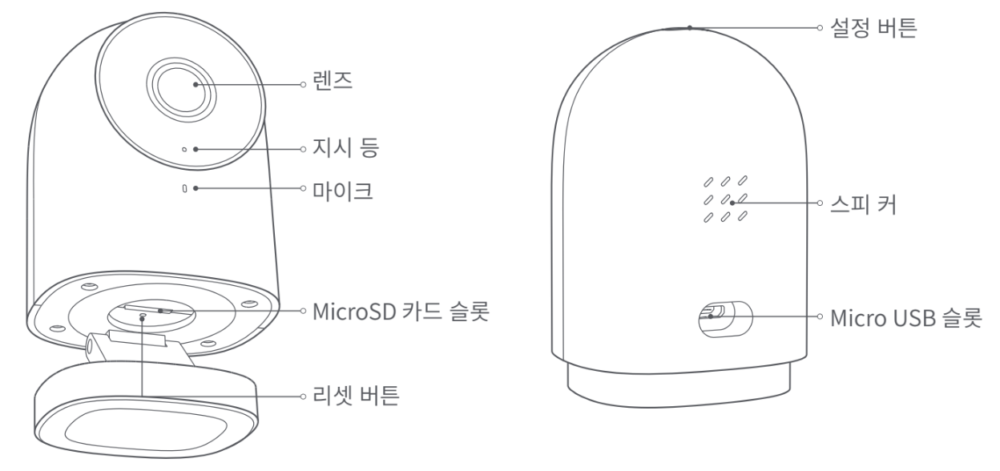
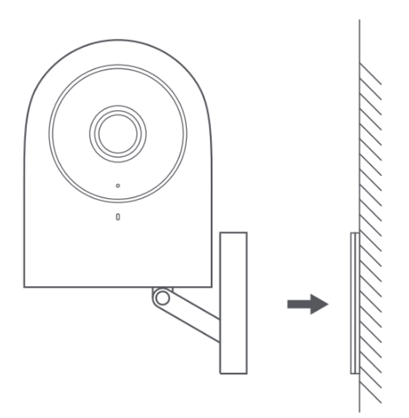

4 홈카메라 허브 G2H/G2H Pro
4.1 설치 영상
4.2 제품 소개
아카라 스마트 허브 G2H Pro는 카메라와 스마트 허브의 기능을 통합한 제품입니다. 카메라를 통해 영상 통화, 동작 감지, 소리 감지, MicroSD 카드를 통한 영상 녹화, NAS 스토리지, 타임랩스, 사생활 보호 영역 설정 등 다양한 기능을 지원합니다. 또한 Zigbee 통신 방식을 통해 센서, 컨트롤러 등 다양한 하위 장치를 연결하여 홈 보안, 데이터 확인, 원격 제어 등 다양한 스마트 시나리오를 구성할 수 있습니다. 애플 홈 공식 액세서리로 홈킷 보안 비디오를 지원합니다.

4.3 설치 전 확인 사항
Wi-Fi 또는 데이터 통신 방식을 지원하는 스마트폰이나 태블릿이 필요합니다. (iOS, Android 모두 가능)
Wi-Fi에 연결이 되어 있고 네트워크 연결이 안정적인지 확인해 주세요.
4.4 제품 설치
스마트 허브 G2H Pro가 정상적으로 앱에 추가되었는지 확인 후에 벽에 설치해 주세요.
책상, 테이블, 책장 같은 수평 공간에 제품을 올려두고 사용할 수 있습니다.
하단부의 받침대에는 냉장고, 철문 등과 같은 철제 물질의 표면에 부착할 수 있도록 자석이 포함되어 있습니다. 단, 컴퓨터 본테나 하드 드라이브 근처에 설치하지 마세요.
양면 테이프로 유리, 타일, 라텍스 소재 벽면과 같이 매끄러운 표면에 자석을 부착하여 사용할 수 있습니다. 또는 동봉된 나사로 메탈 플레이트를 고정한 후 제품을 부착해서 사용할 수 있습니다.

4.5 빠른 설정
4.5.1 Aqara Home 앱 다운로드
앱 스토어에서 “Aqara Home”을 검색하거나 아래 로고를 클릭해 주세요.


4.5.2 허브 설치하기
허브 설치 위치 선택: 허브와 공유기 사이 그리고 허브 주변에 금속 차폐물과 같은 방해 물질이 없는 것이 좋습니다.
허브에 전원 연결하기: 전원선을 전원 어댑터를 연결한 후 제품 뒷면의 Micro USB 슬롯에 연결해 주세요. 전원이 연결되면 지시등이 노란색으로 빠르게 깜빡입니다. 스마트폰이나 태블릿이 2.4GHz대역의 WiFi에 연결되어 있는지 확인해 주세요.
4.5.3 아카라 홈 앱에 허브 추가하기
아카라 홈앱에서 첫페이지 오른쪽 상단의 ’+’를 눌러 ’장치 추가’를 누른 뒤 ’스마트 허브 G2H Pro’를 선택해 주세요. 앱의 지시 사항에 따라 장치를 추가하고, 연결이 완료되면 지시등이 파란색으로 변경됩니다.
장치 추가에 실패하는 경우 아래의 사항을 확인해 주세요.
4.6 기본 기능
4.6.1 하위 장치 추가
허브를 성공적으로 추가한 후 아카라홈 앱의 안내 사항에 따라 하위 장치들을 추가해 주세요.
4.6.2 애플 홈킷 연결하기
애플 홈 앱에서 오른쪽 상단의 ‘+’를 눌러 ’액세서리 추가’ 페이지로 이동 하세요.
제품 하단의 홈킷 코드를 스캔하거나 수동으로 코드를 입력하여 허브를 애플 홈킷에 연결합니다.
애플 홈킷 연결에 실패하는 경우 아래의 사항을 확인해 주세요:
안내 사항
Works with Apple 로고의 사용은 이 제품이 로고에 표시된 기술과 연동하여 사용할 수 있도록 디자인 되었다는 것을 의미하며, Apple의 성능 기준에 부합함을 인정 받았다는 것을 의미합니다. 애플은 해당 제품에 대한 사용이나 이에 적합한 안전 기준에 책임을 지지 않습니다. 스마트 허브 G2H Pro를 통해 녹화한 영상 데이터는 최대 10일까지 iCloud에 저장되며 iCloud에 저장되며 iPhone, iPad 또는 Mac의 애플 홈 앱에서 확인할 수 있습니다. 200GB요금제를 이용할 경우 스마트 허브 G2H Pro 1대를 등록할 수 있으며, 2TB 요금제를 이용할 경우 최대 5개의 허브를 등록할 수 있습니다. 녹화한 영상 데이터는 iCloud 저장 용량에 포함되지 않습니다.
스마트 허브 G2H Pro와 iPhone, iPad, Apple Watch, HomePod, Mac등의 Apple 기기와의 통신에는 홈킷 기술이 적용됩니다.
제품이 Wi-Fi 연결이 가능한 범위 내에 있는지 확인해 주세요.
제품 근처에 장애물이나 전자파장애를 일으킬 수 있는 물체가 없는 지 확인해 주세요.
본 제품은 실내에서만 사용할 수 있습니다. 습기가 많은 환경이나 실외에서 사용하지 마세요.
4.6.3 버튼 사용 방법
| 사용 방법 | 상태 설병 |
|---|---|
| 설정 버튼 한 번 누르기 | 경고음을 종료합니다. |
| 설정 버튼 세번 누르기 | 하위 장치 액세스를 허용합니다. |
| 리셋 버튼 다섯번 누르기 | 장치를 재설정하고, 하위장치 연결 정보를 포함한 로컬데이터를 초기화합니다. |
| 리셋버튼 5초간 길게 누르기 | 장치를 재설정하지만, 하위장치 연결 정보를 포함한 로컬데이터는 유지합니다. |
| 설정버튼 3초간 길게 누르기 | 음성 통화를 요청합니다. |
4.7 지시등 상태 설명
| 지시등 상태 | 장치 상태 |
|---|---|
| 노란색 지시등 점등 | 기기 켜지는 중 |
| 노란색 지시등 빠르게 점멸 | 네트워크 연결 대기 중 |
| 노란색 지시등 천천히 점멸 | 장치 리셋/OTA 업데이트 중 |
| 파란색 지시등 빠르게 점멸 | 네트워크 연결중 |
| 파란색 지시등 천천히 점멸 | 네트워크 연결 완료 및 계정 연결 중 |
| 파란색 지시등 점등 | 정상 동작 중 |
| 빨간색 지시등 점등 | 영상 스트리밍 중 |
| 하얀색 지시등 점등 | 장치가 켜진 상태에서 10분 이상 어떠한 네트워크에도 연결되지 않음 |
| 보란색 지시등 천천히 점멸 | 하위 장치 추가 준비 |
| 지시등 꺼짐 | 지시등 끄기가 설정된 상태 프라이버시 모드 전원이 연결되지 않은 상태 |
4.8 제품 사양
4.9 주의 사항
본 제품은 어린이가 사용할 경우 위험할 수 있으므로, 어린이의 손이 닿지 않는 곳에 두십시오.
본 제품은 실내 사용 용도로 설계되엇습니다. 습한 환경이나 실외에서 사용하지 마십시오.
비바람에 노출된 장소, 물이 튀는 곳에 설치하지 마십시오. 물 또는 액체류를 제품에 엎지를 경우 고장, 감전 및 화재의 위험이 있습니다.
본 제품을 열원 부근에 설치하거나 환기가 잘 되지 않는 밀폐된 공간에서 사용하지 마십시오.
본 제품을 임의로 분해, 수리, 개조하지 마십시오. 수리가 필요한 경우 support@aqara.kr로 연락하십시오.
본 제품은 생활의 편리 및 편의성을 개선하기 위한 용도록 적합합니다. 가정, 건물, 창고 또는 다른 장소의 방범 용도로 사용하는 것을 권장하지 않습니다. 사용자가 상기 사용 지침을 따르지 않고 해당 제품을 사용할 경우에 발생하는 어떠한 위험 및 재산 손실에도 제조사는 귀책이 없음을 알려 드립니다.
제품을 벽면에 고정시키기 위해 하단부의 거치대에 강력한 자석이 내장되어 있습니다. 그럼에도 불구하고 제품이 떨어지는 경우에 부상을 방지하기 위하여 2m이하의 높이에 설치하는 것을 권장합니다.
해당 제품에는 전원 어댑터가 포함되어 있지 않습니다. 별도로 구매 후 사용해 주시기 바랍니다.